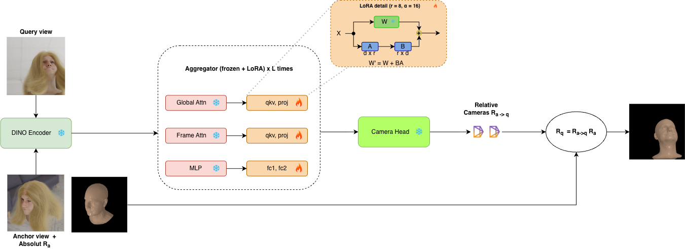
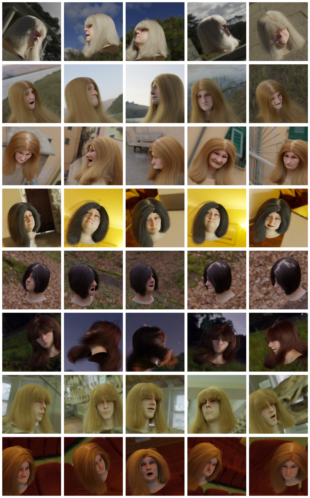
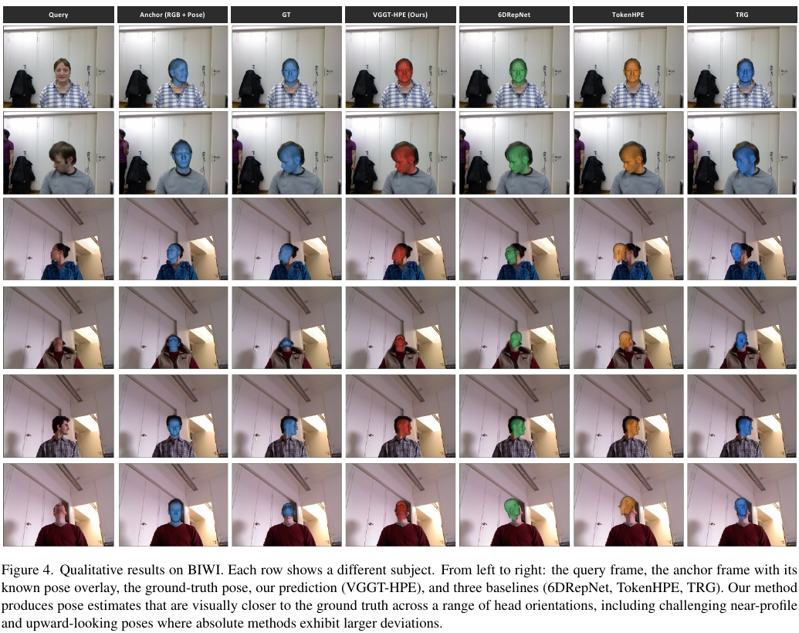
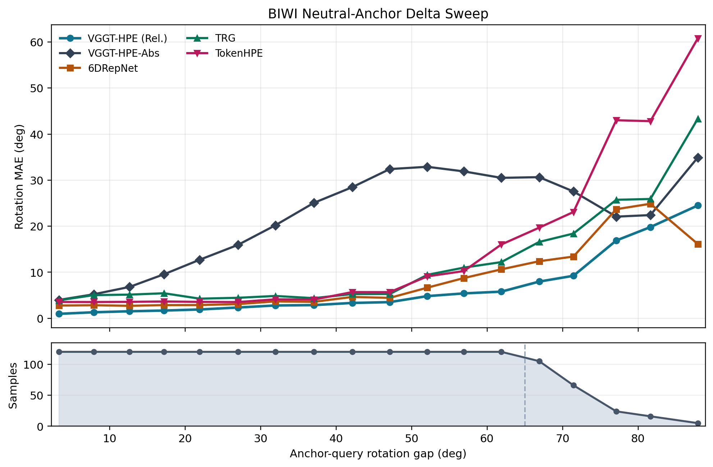
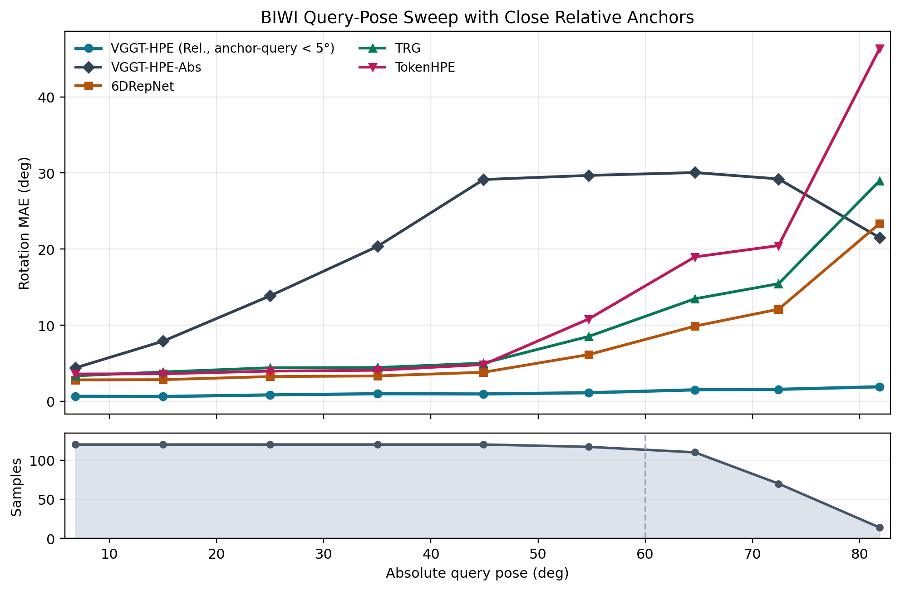

1
Input Pair
Input: anchor image + query image.
Monocular head pose estimation is traditionally formulated as direct regression from a single image to an absolute pose. This paradigm forces the network to implicitly internalize a dataset-specific canonical reference frame. In this work, we argue that predicting the relative rigid transformation between two observed head configurations is a fundamentally easier and more robust formulation. We introduce VGGT-HPE, a relative head pose estimator built upon a general-purpose geometry foundation model. Fine-tuned exclusively on synthetic facial renderings, our method sidesteps the need for an implicit anchor by reducing the problem to estimating a geometric displacement from an explicitly provided anchor with a known pose. As a practical benefit, the relative formulation also allows the anchor to be chosen at test time — for instance, a near-neutral frame or a temporally adjacent one — so that the prediction difficulty can be controlled by the application. Despite zero real-world training data, VGGT-HPE achieves state- of-the-art results on the BIWI benchmark, outperforming established absolute regression methods trained on mixed and real datasets. Through controlled easy- and hard-pair benchmarks, we also systematically validate our core hypothesis: relative prediction is intrinsically more accurate than absolute regression, with the advantage scaling alongside the difficulty of the target pose.
Our goal is to estimate the pose of a query head image by predicting its rigid transformation relative to an anchor image with known pose.

Input: anchor image + query image.
Backbone: VGGT camera branch.
Adaptation: LoRA fine-tuning, backbone mostly frozen. Output: relative transform Tq←a.
Trained only on synthetic FLAME renderings. 250 identities, varying hairstyles, expressions, viewpoints. Supervised on rotation, translation, and FoV.

VGGT-HPE achieves the lowest yaw and pitch errors among all methods, while being the only method trained exclusively on synthetic data.

Qualitative results on BIWI. Each row shows a different subject. From left to right: the query frame, the anchor frame with its known pose overlay, the ground-truth pose, our prediction (VGGT-HPE), and three baselines (6DRepNet, TokenHPE, TRG).
Table 1 presents the main cross-domain evaluation, split into reported numbers and reproduced results under a shared MTCNN protocol.
| Method | Yaw ↓ | Pitch ↓ | Roll ↓ | MAE ↓ | Data |
|---|---|---|---|---|---|
| Reported numbers | |||||
| Dlib | 11.86 | 13.00 | 19.56 | 14.81 | R |
| 3DDFA | 5.50 | 41.90 | 13.22 | 19.07 | M |
| EVA-GCN | 4.01 | 4.78 | 2.98 | 3.92 | M |
| HopeNet | 4.81 | 6.61 | 3.27 | 4.89 | M |
| QuatNet | 4.01 | 5.49 | 2.94 | 4.15 | M |
| Liu et al. | 4.12 | 5.61 | 3.15 | 4.29 | M |
| FSA-Net | 4.27 | 4.96 | 2.76 | 4.00 | M |
| HPE | 4.57 | 5.18 | 3.12 | 4.29 | M |
| WHENet-V | 3.60 | 4.10 | 2.73 | 3.48 | M |
| RetinaFace | 4.07 | 6.42 | 2.97 | 4.49 | R |
| FDN | 4.52 | 4.70 | 2.56 | 3.93 | M |
| MNN | 3.98 | 4.61 | 2.39 | 3.66 | M |
| TriNet | 3.05 | 4.76 | 4.11 | 3.97 | M |
| 6DRepNet | 3.24 | 4.48 | 2.68 | 3.47 | M |
| Cao et al. | 4.21 | 3.52 | 3.10 | 3.61 | M |
| TokenHP | 3.95 | 4.51 | 2.71 | 3.72 | M |
| Cobo et al. | 4.58 | 4.65 | 2.71 | 3.98 | M |
| img2pose | 4.57 | 3.55 | 3.24 | 3.79 | M |
| PerspNet | 3.10 | 3.37 | 2.38 | 2.95 | R |
| TRG | 3.04 | 3.44 | 1.78 | 2.75 | M |
| VGGT-HPE (Rel., ours) | 2.24 | 3.04 | 3.17 | 2.82 | S |
| Reproduced under shared MTCNN protocol | |||||
| 6DRepNet | 3.74 | 4.95 | 3.04 | 3.91 | M |
| TokenHPE-v1 | 5.57 | 6.23 | 3.79 | 5.20 | M |
| TRG | 4.58 | 7.18 | 3.68 | 5.15 | M |
| VGGT-HPE-Abs (ours) | 4.90 | 7.01 | 3.53 | 5.15 | S |
| VGGT-HPE (Rel., ours) | 2.24 | 3.04 | 3.17 | 2.82 | S |
R = real, M = mixed, S = synthetic.
To study how prediction difficulty scales with the anchor-target rotation gap, we construct two complementary benchmarks from BIWI.
| Method | Yaw ↓ | Pitch ↓ | Roll ↓ | MAE ↓ | Data |
|---|---|---|---|---|---|
| VGGT-HPE-Abs | 40.74 | 18.65 | 33.66 | 31.02 | S |
| TokenHPE | 21.85 | 26.35 | 19.34 | 22.51 | M |
| TRG | 8.95 | 33.88 | 8.87 | 17.23 | M |
| 6DRepNet | 14.27 | 18.91 | 6.81 | 13.33 | M |
| VGGT-HPE (Rel., ours) | 3.81 | 15.87 | 6.93 | 8.87 | S |
BIWI hard benchmark (360 neutral-anchor / extreme-query pairs).
| Method | Yaw ↓ | Pitch ↓ | Roll ↓ | MAE ↓ | Data |
|---|---|---|---|---|---|
| VGGT-HPE-Abs | 5.62 | 2.26 | 4.06 | 3.98 | S |
| TokenHPE | 3.41 | 5.99 | 1.43 | 3.61 | M |
| TRG | 3.59 | 4.24 | 2.52 | 3.45 | M |
| 6DRepNet | 2.31 | 4.93 | 1.14 | 2.80 | M |
| VGGT-HPE (Rel., ours) | 1.17 | 0.74 | 0.97 | 0.96 | S |
BIWI easy neutral-anchor benchmark (360 pairs; pair delta mean: 3.82°).

Figure 5. BIWI neutral-anchor evaluation as a function of anchor-query rotation gap. The upper plot reports rotation MAE, while the lower band shows the number of sampled pairs per bin.

Figure 6. BIWI query-pose evaluation as a function of absolute query pose. For VGGT-HPE, each query is paired with a same-subject anchor whose anchor-query geodesic gap is below 5°.
Full fine-tuning destroys the pretrained representations and performs worst on both datasets. LoRA strikes the best balance, preserving the pretrained geometric priors while adapting to the facial domain.
| Synthetic | BIWI | |||||||
|---|---|---|---|---|---|---|---|---|
| Variant | Yaw ↓ | Pitch ↓ | Roll ↓ | MAE ↓ | Yaw ↓ | Pitch ↓ | Roll ↓ | MAE ↓ |
| Adaptation strategy | ||||||||
| Full finetune | 38.00 | 33.76 | 31.12 | 34.29 | 23.07 | 17.90 | 10.05 | 17.00 |
| From scratch | 9.21 | 15.07 | 14.05 | 12.78 | 7.71 | 8.12 | 6.94 | 7.59 |
| Head-only | 3.82 | 6.50 | 5.89 | 5.40 | 18.08 | 15.17 | 8.25 | 13.83 |
| LoRA (ours) | 2.46 | 4.65 | 4.51 | 3.87 | 2.24 | 3.04 | 3.17 | 2.82 |
| Loss and formulation variants (all LoRA) | ||||||||
| Small-Gap | 17.03 | 23.20 | 21.77 | 20.66 | 7.38 | 7.07 | 3.88 | 6.11 |
| Abs. Pair | 3.12 | 4.59 | 7.01 | 4.91 | 3.61 | 6.99 | 6.49 | 5.69 |
| Abs. Single | 2.44 | 4.03 | 3.24 | 3.24 | 4.90 | 7.01 | 3.53 | 5.15 |
| T-Aux, No FoV | 2.94 | 5.45 | 6.01 | 4.80 | 2.94 | 3.91 | 3.90 | 3.59 |
| No FoV | 2.39 | 4.13 | 4.19 | 3.57 | 2.64 | 4.05 | 3.61 | 3.43 |
| T-Aux | 2.43 | 4.37 | 4.48 | 3.76 | 2.76 | 3.10 | 3.90 | 3.25 |
| Geo Loss | 2.28 | 3.99 | 3.76 | 3.34 | 2.95 | 3.24 | 3.32 | 3.17 |
| Rot.-Only | 2.40 | 4.31 | 4.06 | 3.59 | 2.58 | 3.48 | 3.32 | 3.12 |
| Baseline | 2.19 | 4.15 | 3.96 | 3.43 | 2.61 | 3.17 | 3.31 | 3.03 |
| VGGT-HPE | 2.46 | 4.65 | 4.51 | 3.87 | 2.24 | 3.04 | 3.17 | 2.82 |
Performance naturally degrades compared to using the ground-truth anchor, but the drop is moderate when the anchor estimator is reasonably accurate.
| Method | Yaw ↓ | Pitch ↓ | Roll ↓ | MAE ↓ |
|---|---|---|---|---|
| VGGT-HPE (Rel., GT anchor) | 2.24 | 3.04 | 3.17 | 2.82 |
| VGGT-HPE (Rel., VGGT-HPE-Abs anchor) | 4.56 | 5.28 | 3.42 | 4.42 |
| VGGT-HPE (Rel., 6DRepNet anchor) | 2.89 | 6.05 | 3.29 | 4.08 |
| VGGT-HPE (Rel., TokenHPE anchor) | 3.35 | 7.30 | 3.91 | 4.85 |
| VGGT-HPE (Rel., TRG anchor) | 4.02 | 12.03 | 7.13 | 7.73 |
| Method | Yaw ↓ | Pitch ↓ | Roll ↓ | MAE ↓ |
|---|---|---|---|---|
| VGGT-HPE (Rel., GT anchor) | 3.81 | 15.87 | 6.93 | 8.87 |
| VGGT-HPE (Rel., VGGT-HPE-Abs anchor) | 6.93 | 17.36 | 8.68 | 10.99 |
| VGGT-HPE (Rel., 6DRepNet anchor) | 4.81 | 19.36 | 6.62 | 10.26 |
| VGGT-HPE (Rel., TokenHPE anchor) | 5.92 | 20.31 | 7.44 | 11.22 |
| VGGT-HPE (Rel., TRG anchor) | 7.07 | 21.82 | 17.00 | 15.30 |
@inproceedings{vasileiou2026vggthpe,
title={VGGT-HPE: Reframing Head Pose Estimation as Relative Pose Prediction},
author={Vasileiou, Vasiliki and Filntisis, Panagiotis P. and Maragos, Petros and Daniilidis, Kostas},
booktitle={CVPR Workshop},
year={2026}
}